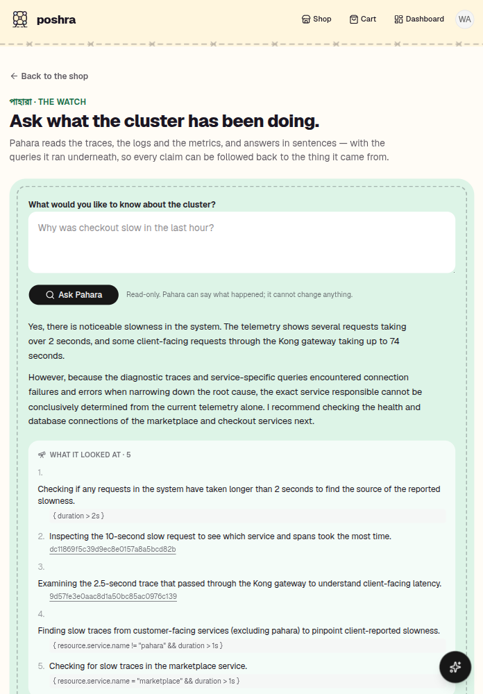

An agent with the traces, the logs and the metrics — and no way to change any of them. It answers in sentences, and every claim can be followed back to the query it came from.

Yes, there is noticeable slowness. The telemetry shows several requests taking over 2 seconds, and some client-facing requests through the Kong gateway taking up to 74 seconds.
However, because the diagnostic traces and service-specific queries encountered connection failures when narrowing down the root cause, the exact service responsible cannot be conclusively determined from the current telemetry alone. I recommend checking the health and database connections of the marketplace and checkout services next.
{ duration > 2s }dc11869f5c39d9ec8e0157a8a5bcd82b9d57fe3e0aac8d1a50bc85ac0976c139{ resource.service.name != "pahara" && duration > 1s }{ resource.service.name = "marketplace" && duration > 1s }